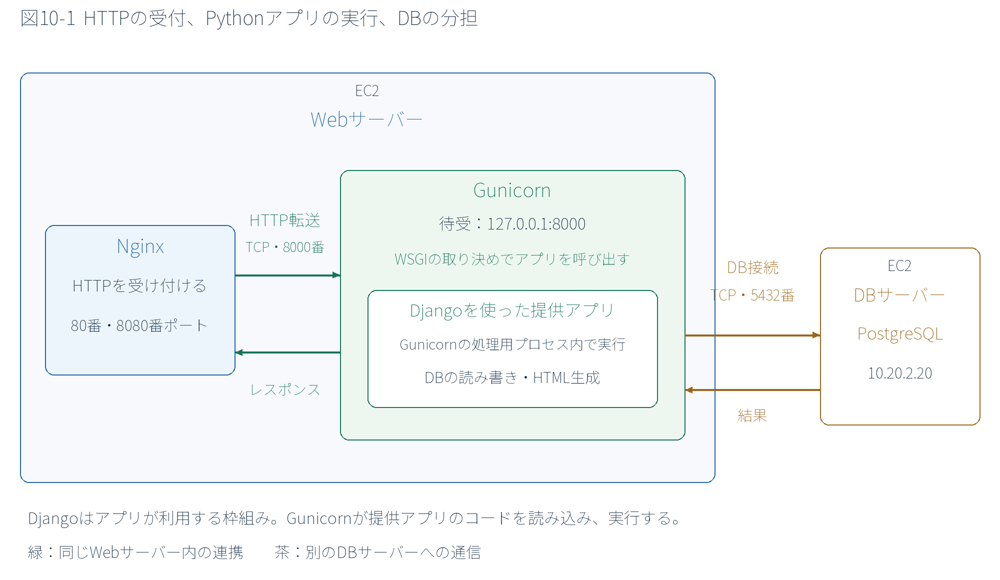
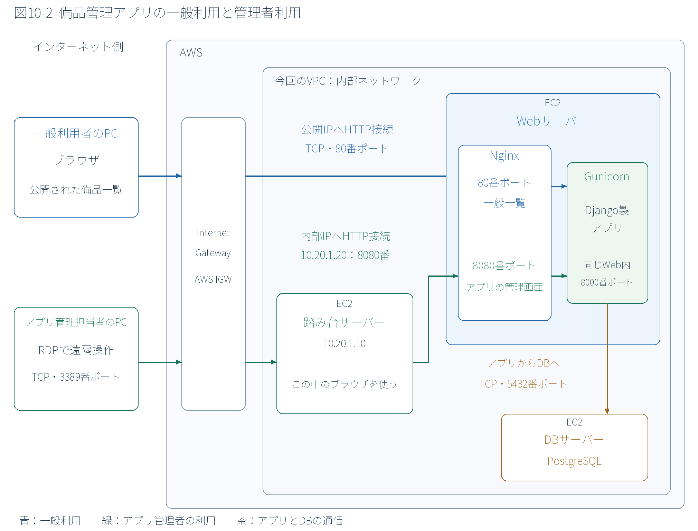
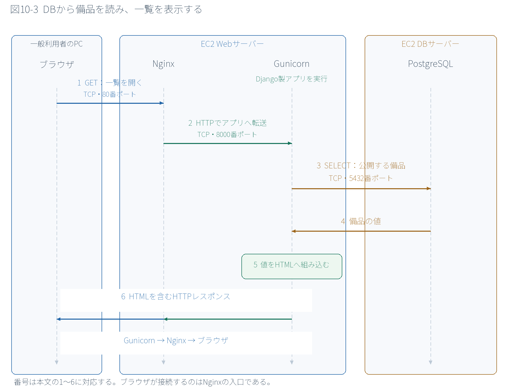
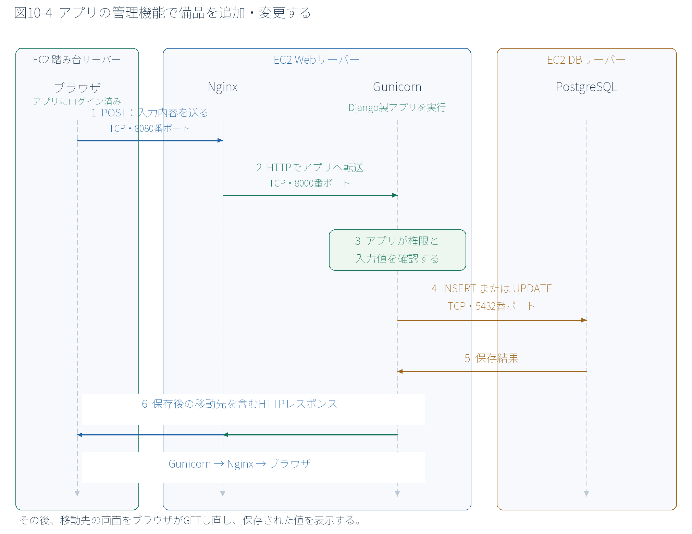

第10章 WebサーバーとアプリとDBの連携
この章で分かること
これまでに、ファイルを返すWebサーバー、名前を答える内部DNS、データを管理するDBを学んだ。ここからは、それらを学校の備品管理アプリへつなげる。アプリのプログラムは提供済みであり、サーバー上で動かすための土台を構築する。
本章では、一覧を開いたときと、管理画面で備品を追加したときに、どのソフトウェアが何を担当するかを追う。ブラウザ、Webサーバー内の処理、DBサーバーを一つの流れとして理解しよう。
10.1 保存済みファイルと、その場で作るページ
第5章の静的配信では、Nginxが保存済みのファイルを読み、内容をHTTPレスポンスとして返した。一方、備品一覧は、その時点のDBの値を読んで作る。管理担当者が数量を変更すれば、後から取得する一覧にも変更後の値が反映される。
このように、リクエストの処理中にデータを取得して本文を作る処理を動的なページの生成として考える。表示のたびにPythonコードそのものを書き換えるのではなく、提供されたアプリがDBの値を読み、HTMLの本文へ組み込む。
| 対象 | 本文やデータの準備方法 |
|---|---|
| 説明用のテキストファイル | 保存したファイルの内容を配信する |
| 備品一覧のHTML | アプリがDBの公開対象の備品を読み、その値から作る |
| CSSや画像 | 動的なページと一緒に使う場合も、静的ファイルとして配信できる |
動的な一覧と静的なCSSは、一つのWebシステムで同時に使える。ページの内容を作る処理と、画面の見た目を指定するファイルの配信は、役割が違う。
10.2 Nginx、Gunicorn、Djangoの分担
今回の備品管理アプリは、Pythonというプログラミング言語で作られている。その開発に使われているのがDjango（ジャンゴ）である。Djangoは、URLに応じた処理、DBの読み書き、HTMLの生成、管理画面など、Webアプリでよく使う機能をまとめたフレームワークである。提供アプリは、その機能を使って備品の一覧表示や追加・変更を行う。
Gunicorn（グニコーン）は、そのPython製アプリを動かすためのソフトウェアである。起動時に提供アプリのPythonコードを読み込み、処理用のプロセスで実行する。NginxからHTTPリクエストを受け取ると、アプリの処理を呼び出し、アプリが作った結果をHTTPレスポンスとして返す。
この呼び出しには、PythonのWebアプリと、それを動かすソフトウェアとの接続方法を定めたWSGI（Web Server Gateway Interface）という取り決めを使う。Djangoには、この方法で処理を受け付ける入口がある。Gunicornはその入口を呼び出すため、アプリをGunicorn専用の形式へビルドし直す必要はない。DjangoとGunicornの接続
| ソフトウェア | 今回の役割 |
|---|---|
| Nginx | ブラウザからHTTP接続を受ける。静的ファイルを返し、アプリの処理が必要なリクエストをGunicornへ渡す |
| Gunicorn | HTTPリクエストをPythonのアプリの処理へつなぎ、その結果をHTTPレスポンスとして返す |
| Django | 提供アプリが利用するフレームワーク。DBの利用、HTMLの生成、アプリ管理者の認証や管理画面などを支える |
NginxとGunicornは、同じEC2 Webサーバー上で動く。Djangoを使った提供アプリの処理は、Gunicornの処理用プロセス内で実行される。PostgreSQLは別のEC2 DBサーバー上で動き、アプリから送られたSQLを処理する。

図10-1 HTTPを受ける処理と、アプリの処理。 NginxからGunicornへは同じWebサーバー内でHTTP転送する。GunicornはWSGIの取り決めでアプリを呼び出し、アプリが別のDBサーバーへ接続する。
10.3 リバースプロキシで、入口からアプリへ渡す
ブラウザから来たHTTPリクエストをNginxが受け取り、アプリを動かすGunicornへ転送する。Gunicornからレスポンスが返ると、Nginxがそれをブラウザへ返す。このように、アプリの手前で接続を受け、代わりに転送先へ接続する仕組みをリバースプロキシという。ブラウザはNginxの入口へアクセスするだけで、その後ろのGunicornの接続先を指定する必要がない。
今回のGunicornは、Webサーバー自身の127.0.0.1:8000で待ち受ける。Nginxは、同じWebサーバー内からTCPで8000番ポートへ接続し、HTTPリクエストを渡す。利用者PCや踏み台サーバーから、この127.0.0.1へ接続してもWebサーバー内のGunicornには届かない。127.0.0.1は、接続操作を行ったコンピュータ自身を指すためである。
設定の説明例：Nginxがアプリへ渡す転送先。
proxy_pass http://127.0.0.1:8000;リバースプロキシは、複数台のアプリへ処理を分散するときにも使えるが、転送先が一つでも利用できる。今回のNginxは、次の役割を担当する。
・ 一般用と管理用の入口を分ける。 一般用はWebサーバーの80番ポート、アプリ管理用は内部IPの8080番ポートで受け付ける。管理用は踏み台サーバーからの接続に限定する。
・ 入口に応じて通すリクエストを決める。 一般用の入口では管理画面の/admin/を転送せず、404を返す。アプリへ転送するときも、どちらの入口で受けたかをNginxが指定し、アプリ側が管理画面への経路を判定する。
・ 静的ファイルを配信する。 CSSなどの保存済みファイルはNginxが読み、Gunicornへ転送せずに返す。
Gunicornの待受や通信許可を変更すれば、Nginxを介さずHTTPで接続する構成も技術的には作れる。しかし、今回Nginxに担当させている入口の制限や静的配信も含めて設計する必要がある。今回は、その役割をNginxへ持たせ、Gunicornは同じWebサーバー内からだけ利用する。
管理者のユーザー名・パスワードを確かめ、備品の追加や変更を許可するのは、Djangoを使ったアプリの機能である。Nginxは「どの入口から、どの接続元の通信を通すか」を扱う。Nginxのリバースプロキシ設定
10.4 アプリの一般利用と管理者利用
備品管理アプリには、一般利用者が備品一覧を見る機能と、アプリの管理担当者が備品を登録・変更する機能がある。同じアプリを使う場合でも、利用目的に応じて入口と使える機能を分ける。
| 利用する人 | アプリで行うこと | 今回の接続方法 |
|---|---|---|
| 一般利用者 | 公開対象の備品の名前、数量、保管場所などを見る | 手元のPCのブラウザから、インターネット経由でWebサーバーの公開IPの80番ポートへ接続する |
| アプリの管理担当者 | 管理画面へログインし、備品を閲覧・追加・変更する | RDPで踏み台サーバーへ入り、その中のブラウザからWebサーバーの内部IPの8080番ポートへ接続する |
一般利用者が開く一覧には、備品を追加・変更する操作は置かない。管理担当者は、踏み台サーバーのデスクトップ内でブラウザを開き、http://admin.lab.test:8080/admin/へアクセスする。内部DNSがadmin.lab.testをWebサーバーの内部IP 10.20.1.20に名前解決し、ブラウザはその8080番ポートへHTTPで接続する。

図10-2 備品管理アプリの二つの入口。 青は一般利用、緑はアプリ管理者の利用経路。管理担当者のPCから踏み台まではRDP、踏み台内のブラウザからWebサーバーまではHTTPで接続する。どちらの入口も、同じWebサーバー上のGunicornとアプリにつながる。
RDPに接続すると操作できるのは、踏み台サーバーのデスクトップである。その中のブラウザで管理画面を開いた後、備品管理アプリの管理者として、改めてログインする。RDP接続とアプリへのログインは、別の操作である。
ここでいう管理操作は、アプリの中で備品の情報を追加・変更することである。Ubuntu OSの設定やサービスを変更する操作とは区別する。OSを操作する場合は、踏み台サーバーの端末から対象サーバーへSSHで接続する方法などを使う。
10.5 DBの値が一覧になるまで
一般利用者が備品一覧を開くと、アプリはDBから公開対象の備品を読み、その値を組み込んだページを作る。図10-3の番号に沿って、リクエストからレスポンスまでを追ってみよう。名前を使って接続する場所では、接続前にDNSで名前解決する。

図10-3 一覧を表示する処理の順序。 1〜6は、次の説明の番号に対応する。Django製アプリはGunicornの処理用プロセス内で動く。
1. 一覧をリクエストする。 利用者PCのブラウザが、Webサーバーの80番ポートへHTTPのGETリクエストを送る。
2. アプリへ渡す。 Nginxが、同じWebサーバー内のGunicornの8000番ポートへHTTPで転送する。Gunicornがアプリの一覧処理を呼び出す。
3. 公開する備品を読む。 アプリがDBサーバーの5432番ポートへ接続し、公開対象の備品を取得するSELECT文を送る。
4. 備品の値を返す。 DBサーバーのPostgreSQLがSQLを処理し、該当する行の値をWebサーバー上のアプリへ返す。
5. ページの本文を作る。 アプリが、取得した備品の名前や数量などをHTMLへ組み込む。
6. 一覧を表示する。 作られたHTMLがGunicorn、Nginxを通じてHTTPレスポンスとしてブラウザへ返り、画面に表示される。
今回の提供アプリでは、is_publicがtrueの備品を一般一覧へ表示する。falseの備品もDBには保存されているが、一般一覧の取得対象から除く。これはアプリのデータの公開区分であり、サブネットの公開・非公開の区分や、SG（AWSのSecurity Group）の通信許可とは別の意味である。
ブラウザが直接DBサーバーの5432番ポートへ接続するわけではない。DBへの接続元はWebサーバー上のアプリであり、DBのパスワードもそのサーバー側の設定で使う。
10.6 アプリ管理者が備品を追加・変更する
管理担当者が使うのは、備品管理アプリの管理機能である。例えば、新しいプロジェクターを登録したり、既存の備品の数量や保管場所を変更したりする。これらは、ブラウザの管理画面から行うアプリの操作である。
管理画面へログインした後、備品名、数量、保管場所、公開区分などを入力して保存する。図10-4は、そのときの処理を示している。

図10-4 アプリの管理機能から備品を保存する。 1〜6は、次の説明の番号に対応する。管理画面を使うために、ブラウザからDBへ直接SQLを送る必要はない。
1. 入力内容を送る。 踏み台サーバー内のブラウザが、Webサーバーの8080番ポートへ、入力内容を含むHTTPのPOSTリクエストを送る。
2. アプリへ渡す。 Nginxが、同じWebサーバー内のGunicornへHTTPで転送し、Gunicornがアプリの管理画面の処理を呼び出す。
3. 保存してよいか確かめる。 アプリが、ログインした管理者の操作権限と入力値を確認する。例えば、備品を追加する権限があるか、必要な項目が入力されているかを調べる。
4. DBへ保存する。 条件を満たしていれば、アプリがDBへSQLを送る。新規の備品ならINSERTで行を追加し、既存の備品の変更ならUPDATEで対象の行を更新する。
5. 保存結果を返す。 PostgreSQLがSQLを処理し、その結果をアプリへ返す。
6. 保存後の画面へ進む。 アプリが作る保存後の移動先を含むHTTPレスポンスが、GunicornとNginxを通じてブラウザへ返る。ブラウザはその画面を改めてGETし、DBから読み出された新しい値を表示する。
公開対象として保存した備品は、一般利用者が一覧を次に取得したときにも表示される。非公開として保存した備品は管理画面では扱えるが、一般向け一覧には表示されない。
今回のアプリ管理者が使う機能は、備品の閲覧・追加・変更である。備品の削除、利用者やグループの管理は提供しない。これらの機能を使うために、OSのroot権限やDB管理者の権限をアプリ管理者へ与える必要はない。
10.7 画面の表示と、保存した値を照合する
アプリの動作を見るときは、どの備品のどの値を保存し、どこへ表示する想定かを決めて比較する。例えば、公開する備品の数量を変更したら、管理画面、DBの該当行、一般一覧の値を対応させる。
一方、非公開にした備品は管理画面とDBにはあるが、一般一覧には出ないことを読む。一般一覧が空でも、DBが空なのか、公開対象がないのかは、画面だけでは一つに決められない。
SQLで照合するときは、対象のコードなどを条件にしてSELECTで読む。確認のために同じ備品を何度も追加したり、既存の備品を削除したりせず、保存された対象を特定して比べる。
練習・課題5では、提供アプリを配置し、公開一覧と踏み台サーバーからの管理操作をDBへ接続する構成を作る。第11章では、この仕組みを動かすためのコード、依存パッケージ、設定、DBの準備を扱う。
章末問題
問1
備品一覧が動的なページであっても、CSSを静的ファイルとして配信できるのはなぜか。
問2
一般利用者のブラウザが、DBの5432番ポートへ直接接続する構成か。
問3
Webサーバーの80番ポート、8080番ポート、127.0.0.1の8000番ポートは、それぞれ何の入口か。
問4
非公開の備品を保存した後、一般一覧に表示されないことだけで保存失敗と判断できるか。
章末解答
問1
一覧の本文をDBの値から作る処理と、見た目を指定する保存済みCSSの配信は役割が異なり、同じシステムで組み合わせて使えるからである。
問2
異なる。ブラウザはWebサーバーへHTTPで接続し、Webサーバー上のアプリがDBへ接続する。
問3
80番ポートは一般向けのHTTP、8080番ポートは踏み台サーバーから使うアプリ管理用HTTP、同じWebサーバー内の127.0.0.1の8000番ポートはNginxから転送するアプリの待受である。
問4
判断できない。非公開なら一般一覧に出さない動作が想定される。管理画面とDBの対象行に保存されているかを比較する。
参考資料
確認日：2026-11-13。今回の動作は提供アプリの一覧処理、管理画面、入口判定、Nginx設定と照合している。
・ 提供アプリ
・ 練習P5